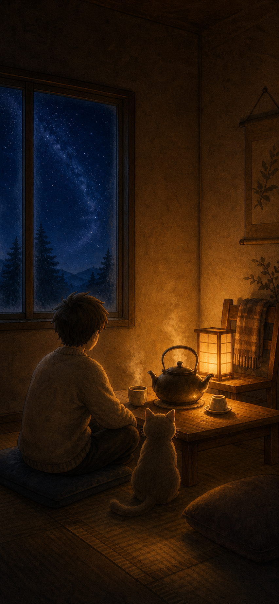
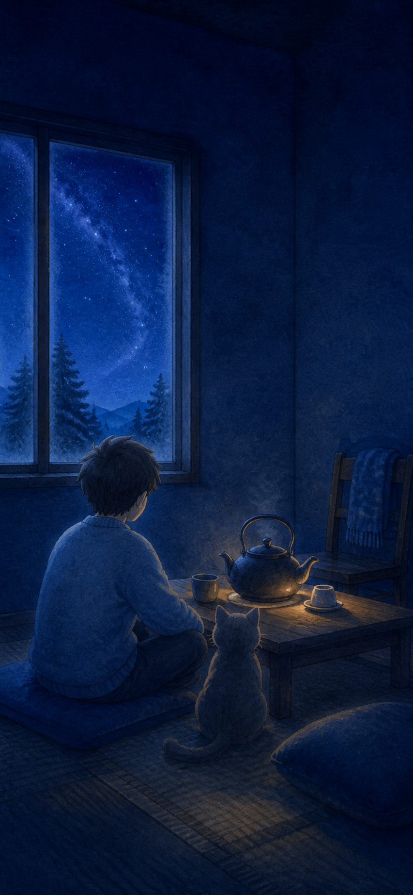

冷静 · 舒心
冷静 · 舒心
00 · 户外
先把心放慢
自然深蓝星空、凉风、草浪与两朵微光花继续成立；V7 一像素也不在本轮改动。
外面让心安静，屋里把人接住。
户外 V7 的深蓝星空、凉风和安静停留全部不变。用户主动触门后， 室内用壶边暖光、人物与猫的暖色轮廓，形成一次清楚但不刺眼的情绪转折。
01 / 视觉链
三幅画不是三个关卡，而是同一口呼吸的冷暖变化。门不闪、不催； 暖意只在用户主动触门后出现。
冷静 · 舒心
自然深蓝星空、凉风、草浪与两朵微光花继续成立；V7 一像素也不在本轮改动。

0.9s · 暖光承接暖纸层从门内掠过，不推镜头、不放大人物；它只负责把冷夜交给室内灯。
先看见灯罩和壶边，再看见人物左、猫右的暖边；窗外冷夜留在第三层，四周仍有深暗。
02 / BEFORE — AFTER
V1 冷蓝 A 图保留在此仅作问题对照；它已被本轮 V1.1 暖屋提案替代， 不会删除旧 V1 目录，也不会进入新实现。

03 / 光线合同
下列比例是正式原创重绘的目标分区，不声称探索图已经完成像素级测量。
04 / 四张关键屏
四屏统一使用 V1.1 暖屋探索图作底；控件保持克制，设置位于安全区， 所有可点击区域至少 44×44，拖拽都有轻触替代。
今晚，想待多久？
不倒数，随时可以走。深暗纸牌承载信息，不把整间房压成弹窗背景；默认 5 分钟，仍由用户明确确认。
把这点光，带到壶边。
灯池本身就是操作物；可拖到壶边，也可先点暖光、再点水壶。首次 10 秒不出现提示。
水热了。
你也先缓一会儿。
灯光只回落 4%，不熄灭、不弹奖励；用户继续坐着时，房间仍然温暖完整。
5:4 卡片只留下“一盏灯”的暖意，不做炫耀式通关图；接收者仍从自己的第一夜开始。
05 / 0.9 秒转场
动效只解释空间和光源，不制造奖励感，也不借镜头推进强迫用户进屋。
06 / 保持不变
下列规则继续锁定；任何正式资产和运行时变化都必须在用户批准 V1.1 后另行制作和复验。
场景、人物、猫、物件使用同一颗粒、边缘和冷暖受光。
人物左、猫右；不幼龄化、不拟人化、不命名，不借现成 IP 轮廓。
360/390/430 保持关键物完整；相邻热区至少 8px。
功能字不靠 SHRINK 塞回固定容器，叙事短句可自然换行。
关闭位移、视差与掠过后，仍能看懂从门到灯、从壶到人的层级。
正式角色、灯、壶、图标和中文必须可编辑、可追溯、原创重绘。
07 / 决策停止线
当前只批准“查看这份暖屋修订提案”，不代表批准探索图入包、正式分层资产、Cocos 接入、 微信预览、审核或发布。批准后，下一步应先由 UI／美术按本合同原创分层重绘 390×844 正式母版， 再把那张真实母版给你看一次。